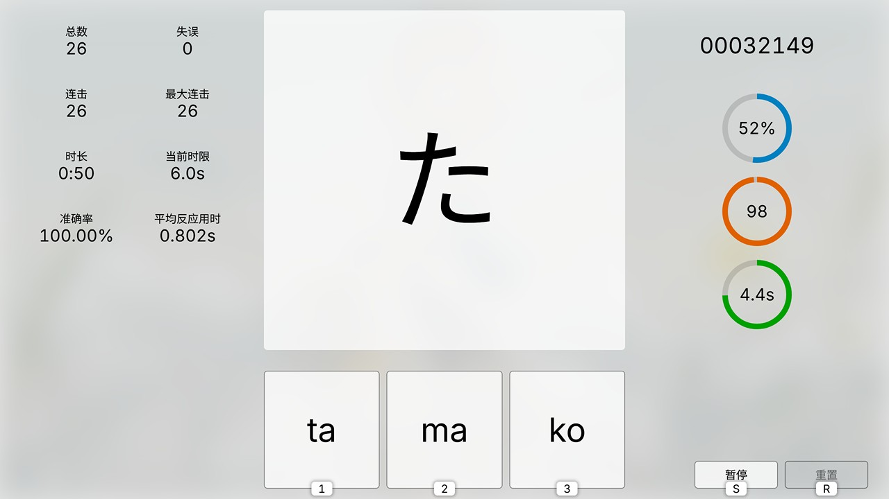

主页
推荐作品
-

虹夏：决不向波喜多投降！
2023/04/30 8千浏览
「大屁股裂了尼玛死！你妹的喜多郁代…」
-

原神主线剧情70秒跑酷式回顾
2023/03/21 12.7万浏览
原本是长达8分钟的 JOJO 梗曲结合游戏画面的剪辑，后来因为太长没人看就剪取了其中一段，意外地挺有人气。
-

Sam Toki 的 osu! 个人战绩回放 (系列)
2022/11/05 1.4万浏览
押す！让鼠标起舞的快感！
-

纳西妲概念鼠标指针 Nahida Concept Mouse Cursors for Windows
2022/10/24 43.3万浏览
目前为止我最广为人知的作品，当时貌似蹭到了热度。纳西妲的小肉腿我 prpr (警笛声
-

孤独摇滚呆毛鼠标指针
2023/02/17 3.4万浏览
波门！
-

芙宁娜概念鼠标指针
2023/08/14 11.1万浏览
「还不快点把我 (boku) 带进你的电脑？」
-

日文假名记忆训练游戏「假名征服者」第二代网页版
2023/11/14 1千浏览
日文假名记忆训练游戏，结合了音游的元素。本游戏针对日语初学者，也欢迎 N1 大佬来挑战高难度。
-
字幕组动画资源惯用文件名含义科普
2020/12/13 3.8万浏览
为初入动画圈的萌新们厘清资源文件名中的「1080P」「HEVC」「CHS」之类的字眼都是什么意思。
-

PC 视频播放：从 PotPlayer 转战 mpv & Anime4K 的个人经验
2023/10/22 2.6万浏览
PC 果然才是影音发烧友的终极平台，无论 Windows 还是 Linux 都萌大奶～
玩具仓库
-

假名征服者
2023/11/05 v3.00 (2024/10/13)
日文假名记忆训练游戏，结合了音游的元素。本游戏针对日语初学者，也欢迎 N1 大佬来挑战高难度。
-

Timer+Lottery
2023/09/27 v2.06 (2024/10/04)
计时与摇号工具。计时器支持倒计时与正计时，以及秒表计圈功能，精确至0.01秒；摇号器支持骰子与扑克牌模式。
-

VoteHelper
2023/09/16 v3.02 (2024/08/27)
投票计票辅助工具与看板，实际上就是好几个计数器。纸张与黑板的实用替代品。
-

七圣召唤 Lite
暂停开发 v0.38 (2024/09/23) Alpha Test
「原神」同人游戏。相比原版「七圣召唤」，具有轻量化、高自由度等特点。
自我介绍
-
喜欢捣鼓电脑的萌豚一只desu～
此处的自我介绍为节选，您可访问我的班固米用户页查看完整版。